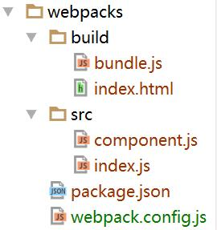

webpack是一款强大的模块加载器兼打包工具，它能把各种资源，例如JS（含JSX）、coffee、样式（含less/sass）、图片等都作为模块来使用和处理。

$ mkdir webpack-demos && cd webpack-demos && git init
$ npm init -y
创建文件
$ touch.gitignore
在文件中增加以下内容
node_modules
.idea
src目录存放源码，build目录存放编译打包之后的资源
$ mkdir src build
$ cd src && touch component.js
exports.name = 'zfpx';
$ cd src && touch index.js
var comp = require('./component.js');
console.log(comp.name);
$ cd build && touch index.html
<script src="bundle.js"></script>
$ npm install --save-dev webpack webpack-dev-server
$ touch webpack.config.js
配置webpack.config.js
var path = require('path');
module.exports = {
entry: path.resolve(__dirname, 'src/index.js'),//入口文件
output: {
path: path.resolve(__dirname, 'build'),//输出路径
filename: 'bundle.js' //输出文件名
},
};
"scripts": {
+ "build": "webpack"
}
$ npm run build